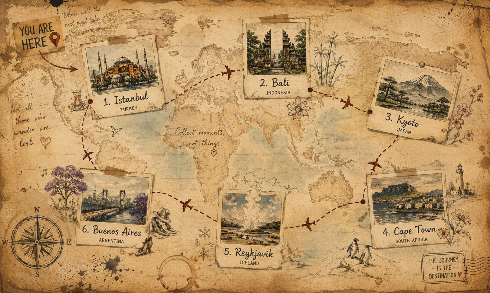
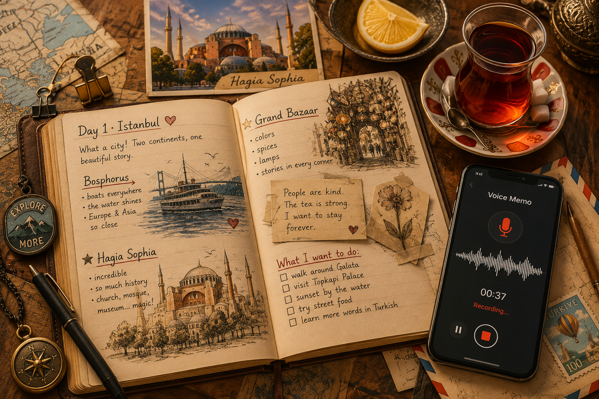
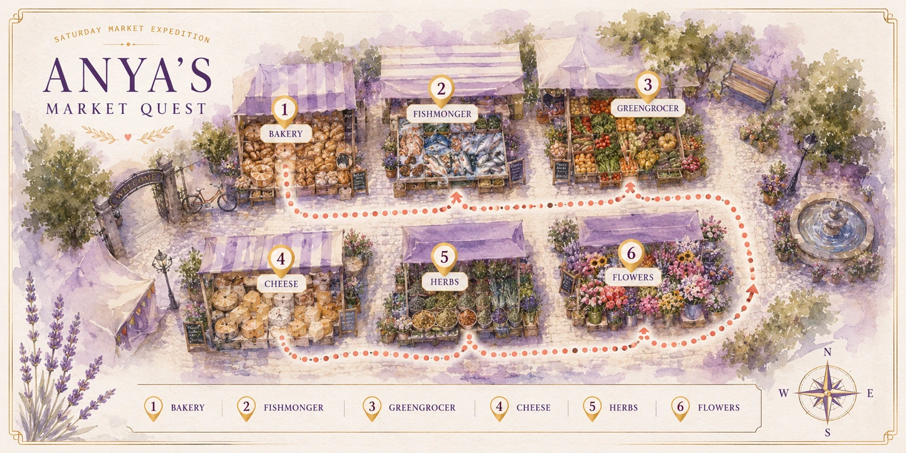

a Friday afternoon at Grandma's · six objects · six worlds · one year
🧭 🧺 🗿 ✉️ 🔔 🔭
B1 · Anya L7continuation of Night TrainReading + Listening + Speaking100% recycled vocabno new words · no new grammar
The thread
Cold November Friday. Anya arrives at Grandma's village. On the kitchen table — a cardboard box with six objects from her whole year of quests. Two afternoons, one scrapbook, six stories.
Six objects
🧭 brass compass · 🧺 woven basket · 🗿 sacred stone · ✉️ old postcard · 🔔 bronze bell · 🔭 small telescope
Grammar focus
No new grammar. We only revive: Past Simple (reg + 60 irreg) · Past Continuous · Present Perfect + PPC (for/since) · used to · will / going to · 5 futures (Pres Cont · Pres S timetable · Future Perfect) · time clauses.
Vocabulary
ZERO new words. Six worlds — Harbour · Market · Temples · Postcards · Lighthouse · Observatory. Everything comes straight from L1-L6.
1 · listen · follow with your eyes · answer six quick questions
📻 Press play first · read along
6 paragraphs · ~2 min · slow narration
1 · The train. It is a cold Friday in November. Anya caught the last afternoon train from the city and arrived at a small country station. Grandma was waiting on the empty platform with a thermos of tea. "You have grown," Grandma said and gave her a long hug. The journey had been long, but Anya was smiling.
2 · The kitchen. The old wooden kitchen smelled of apples and herbs. Grandma lit two candles, because the November afternoons get dark very early. On the table — a brown cardboard box. "Your mother sent it last week," Grandma said. "Open it. We have waited for you."
3 · The first object. Anya opened the box. On top — a small brass compass. "Where did you catch this?" Grandma asked. Anya laughed. "At the harbour, last May. Do you remember? I waited two hours for the ferry. The old brass seller gave it to me as a goodbye gift."
4 · The second object. Under the compass lay a woven basket, very small. "And this?" "That is from the Saturday market, in June. I used to go there every weekend with you. I bargained for it. The stall seller said five coins, I said three."
5 · The third object. A tiny grey stone. "Sacred stone, July," Anya said. "A kind guidegave it to me in the sixth temple. I climbed an ancientpath for two hours to get there. He told me that every traveller takes one stone home."
6 · Tonight and tomorrow. "We have three more — the postcard, the bell and the telescope," Grandma said, "but save them for tomorrow. Tonight, tell me about these three. I will put the kettle on. And after dinner we will start the scrapbook."
Have you ever travelled by train alone? How did you feel on the platform?
Which of the six objects would you most like to hold in your hand? Why?
Do you have any object at home that always tells you a story?
What does November smell like in your kitchen?
Who in your family would you tell these stories to?
If you kept ONE object from this year, what would it be?
🧰Block III · Vocab · flip-cards↻ tap card to flip
2
🧰 Six Worlds · Inventory of what you already know
click · recall · repeat
2 · six worlds from L1-L6 · ~10 words each · ZERO new · tap 🔊 to hear
⚓ World 1 · Harbour (from anyas-postcards · May)
harboursafe water area where boats stopгаваньI waited at the harbour for two hours.
ferryboat that carries people across waterпаромThe ferry was late last May.
pierlong wooden walk out into the seaпирсWe stood on the stone pier.
brassbright yellow metalлатуньThe compass was made of brass.
compasssmall tool with a needle that points northкомпасHe gave me a tiny brass compass.
horizonline where sea or land meets the skyгоризонтHe pointed to the horizon.
seagulllarge sea birdчайкаSeagulls were crying over our heads.
to waitto stay until something happensждатьI waited two hours for the ferry.
to arriveto reach a placeприбыватьThe train has arrived.
directionthe way a thing or person goesнаправлениеHe showed me the right direction.
⚙️ Mini-drill · Harbour · 10 items · do before you speak
① гавань
② паром
③ пирс
④ компас
⑤ горизонт
⑥ I at the harbour for the ferry.
⑦ The ferry two hours late.
⑧ He pointed to the .
⑨ "Direction" means…
⑩ "Brass" is…
🎧 Mini-listening · Harbour · Grandma's voice
~25 sec · Grandma says 5 harbour words + a memory sentence
① Which word did Grandma NOT say?
② How long did Anya wait for the ferry?
🎨 Scene card · the harbour · last May
Look at the picture. This is where Anya met the brass seller.
kid questions · say 1-2 sentences
What do you see in the picture?
Is the sky bright or cloudy?
Can you see any people? Describe them.
Where would YOU sit to wait for a ferry?
Say it · 3 oral questions (2 sentences each)
Have you ever waited for a ferry or a boat? How long?
What direction is your bedroom window facing — north, south, east or west?
Describe a horizon you remember — sea, mountains, or city.
🛍 World 2 · Market (from anyas-market-quest · June)
marketan open place where people sell food and thingsрынокThe Saturday market was busy.
basketwoven container to carry thingsкорзинкаGrandma took a small basket.
stalla small open shop at a marketприлавокThe scarf stall was next to the fountain.
counterthe long table where you payприлавок (стол)She put the money on the counter.
changemoney you get backсдачаHe gave me the change.
receiptpaper that shows what you boughtчекKeep the receipt.
to bargainto argue for a lower priceторговатьсяI bargained for the basket.
herbsplants used to give flavour to food or teaтравыGrandma uses herbs in her tea.
ripeready to eat (about fruit)спелыйThe strawberries are already ripe.
to weighto measure how heavy something isвзвешиватьCould you weigh the tomatoes?
⚙️ Mini-drill · Market · 10 items
① рынок
② корзинка
③ прилавок
④ сдача
⑤ чек
⑥ I for the basket for ten minutes.
⑦ The strawberries are already .
⑧ Could you the tomatoes?
⑨ "Stall" means…
⑩ "Ripe" means…
🎧 Mini-listening · Market · Saturday bargain
~25 sec · a short bargain between Anya and a seller
① What did Anya want to buy?
② What was the final price?
🎨 Scene card · the Saturday market · June
A busy Saturday market with many stalls.
kid questions · 1-2 sentences
How many stalls can you count?
What colours do you see?
What food would you buy first here?
Would YOU like to visit this market? Why?
Say it · 3 oral questions
Have you ever bargained for something? What happened?
Which herbs does your grandma or mum put in tea or soup?
When was the last time you asked for change at a counter?
🏛 World 3 · Temples (from anyas-temples-quest · July)
templea holy building where people prayхрамThe ancient temple stood above the valley.
sacredvery important for religionсвященныйHe gave me a sacred stone.
ancientvery very oldдревнийAn ancient path led up the mountain.
guidea person who shows tourists aroundгидOur guide told six stories.
patha narrow way for walkingтропаWe climbed the stone path.
valleylow land between mountainsдолинаThe valley was full of fog at dawn.
to climbto go upподниматьсяWe climbed for two hours.
stonea small piece of rockкаменьHe gave me a sacred stone.
domeround roof of a temple or mosqueкуполThe golden dome shone in the sun.
magnificentextremely beautiful or grandвеликолепныйThe view was magnificent.
⚙️ Mini-drill · Temples · 10 items
① храм
② священный
③ древний
④ тропа
⑤ камень
⑥ We an ancient path for two hours.
⑦ The golden shone in the sun.
⑧ He gave me a sacred .
⑨ "Magnificent" means…
⑩ "Ancient" means…
🎧 Mini-listening · Temples · the guide's voice
~25 sec · the quiet guide at the sixth temple
① What did the guide give Anya?
② What did the guide whisper?
🎨 Scene card · the ancient path to the temple
An ancient path through a mountain valley.
kid questions · 1-2 sentences
Is the path easy or hard to walk on?
Can you see any buildings in the distance?
What time of day is it in the picture?
Would you walk this path alone or with a friend?
Say it · 3 oral questions
Have you ever seen an ancient building? Where?
Is there a stone or a souvenir you brought back from a trip?
Describe a magnificent view you remember.
✉️ World 4 · Postcards (from anyas-postcards · August)
postcarda thick card with a picture, sent by postоткрыткаI sent twelve postcards.
envelopepaper cover for a letterконвертYour postcard was in a blue envelope.
stampsmall paper that pays for sendingмаркаThe stamp was from Morocco.
addressthe name and number where you liveадресWrite Grandma's address on the back.
handwritingthe way you write with your handпочеркHer handwriting is beautiful.
suitcasebig bag for travelчемоданI unpacked my suitcase.
bustlingvery busy and full of peopleоживлённыйThe bustling train was full of tourists.
airportplace for planesаэропортThe airport was small and old.
journeya long trip from A to BпутешествиеThe journey took thirteen hours.
to sendto make something go to another placeотправлятьI sent her a postcard yesterday.
⚙️ Mini-drill · Postcards · 10 items
① открытка
② конверт
③ марка
④ почерк
⑤ чемодан
⑥ I ran to a red post box right at the .
⑦ My was terrible.
⑧ The plane was already .
⑨ "Bustling" means…
⑩ "Journey" means…
🎧 Mini-listening · Postcards · 3 minutes at the airport
~25 sec · Anya writes a postcard while the plane boards
① How long did Anya have to write the postcard?
② Where did she put the postcard at the end?
🎨 Scene card · the airport café · August
A bustling airport — the moment before boarding.
kid questions · 1-2 sentences
How many people can you see?
Are they in a hurry or relaxed?
Where would YOU sit to write a postcard here?
Have you ever been to a real airport? Describe it in 2 sentences.
Say it · 3 oral questions
Have you ever received a real paper postcard? From whom?
Describe your handwriting in three words.
Which journey do you remember best?
🏚 World 5 · Lighthouse (from anya-04-lighthouse-midnight · October)
lighthousetall tower with a strong light near the seaмаякThe lighthouse stood on the cliff.
cliffa very high rock near the seaутёсThe cliff path was slippery.
fogthick cloud near the groundтуманThe fog was everywhere at midnight.
beamlong line of lightлуч (света)A beam of light cut the fog.
keepera person who looks after somethingсмотрительThe lighthouse keeper was a kind old man.
midnighttwelve o'clock at nightполночьAt midnight the bell rang.
ghostthe spirit of someone who diedпризракA ghost cat was whispering.
bellhollow metal object that makes soundколокол(ьчик)He gave me a bronze bell.
to whisperto speak very quietlyшептатьThe old keeper whispered the story.
secretsomething only you knowсекретHe told me a lighthouse secret.
⚙️ Mini-drill · Lighthouse · 10 items
① маяк
② утёс
③ туман
④ полночь
⑤ шептать
⑥ At the bell rang three times.
⑦ A beam of light cut the .
⑧ The keeper a secret.
⑨ "Cliff" is…
⑩ "Keeper" is…
🎧 Mini-listening · Lighthouse · midnight bell
~25 sec · the keeper speaks at midnight
① How many times did the big bell ring?
② What did the keeper give Anya?
🎨 Scene card · the cliff path · October 31
A narrow cliff path in the fog, near the lighthouse.
kid questions · 1-2 sentences
Is this picture scary or beautiful?
What time of day is it?
Can you hear anything in your head when you look at it?
Would YOU walk here alone at midnight?
Say it · 3 oral questions
Have you ever seen a real lighthouse? Where?
Do you believe in ghost stories? Have you ever heard one?
Can you keep a secret for your best friend? Have you ever broken one?
🔭 World 6 · Observatory (from anya-05-dawn-observatory · November)
observatorybuilding where people look at the starsобсерваторияThe observatory stood on the hill.
telescopelong tube to see things far awayтелескопI looked through a brass telescope.
dawnthe first light before sunriseрассветWe arrived at dawn.
constellationa group of stars with a shapeсозвездиеHe showed me three constellations.
orbitthe path a planet travelsорбитаThe moon moves around the Earth in its orbit.
planeta large body that moves around a starпланетаWe saw three planets at dawn.
cometa bright object with a tail that crosses the skyкометаHe promised we would see a comet.
to predictto say what will happen in futureпредсказыватьThey predict a cold winter.
to promiseto say you will definitely do itобещатьI promised to write every week.
futurethe time that has not come yetбудущееThe future is not ours to see.
⚙️ Mini-drill · Observatory · 10 items
① обсерватория
② телескоп
③ рассвет
④ созвездие
⑤ планета
⑥ I looked through a brass .
⑦ We arrived at before the sun rose.
⑧ A bright with a long tail crossed the sky.
⑨ "Dawn" is…
⑩ "To predict" means…
🎧 Mini-listening · Observatory · dawn at the telescope
~25 sec · the observatory keeper speaks at dawn
① What did the keeper let Anya do?
② What does Anya see through the telescope?
🎨 Scene card · the observatory at dawn
The observatory at the first light of day.
kid questions · 1-2 sentences
How many telescopes can you count?
Is the sky still dark or getting light?
What would you look at first through a telescope?
Would you wake up at dawn to see the sky? Why?
Say it · 3 oral questions
Have you ever looked through a telescope? What did you see?
What time do you usually get up — before or after dawn?
What is one real promise you have kept for a long time?
3
🎬 10 Mini-scenes · one weekend, six worlds
read · 3 Q each
3 · each scene ~55 words · comp + vocab + speak
Scene 1 · Friday 5 p.m. · the platform
Anya stepped off the train and looked at the empty platform. Grandma was waiting next to a small wooden bench. She wore a dark green coat and held two mittens in one hand. "The train has arrived on time for once," Grandma said. Anya hugged her. The journey had been long, but now it was over.
comp. Was the train late or on time?
vocab. "Platform" is…
speak. Who usually meets YOU at a station or airport?
Scene 2 · Friday 5:30 · the walk home
They walked down a narrow path through the village. The fog was rising from the river, and the November air smelled of smoke and apples. "Last May you arrived in the summer dress," Grandma said with a smile. "You have grown so much."
comp. When did Anya arrive here in a summer dress?
vocab. "Fog" means…
speak. What does November smell like in YOUR town?
Scene 3 · Friday evening · the compass
Anya held the small brass compass and turned it slowly. The needle pointed to the kitchen window. "North is that way, Grandma. I have kept it in my drawer since last May. I used to open the drawer every evening and check the direction before I went to sleep."
comp. Where has Anya kept the compass?
vocab. "To check" means…
speak. Do YOU have a drawer where you keep small special things? What is in it?
Scene 4 · Friday night · the basket
Grandma lifted the small woven basket. "Does this one still smell of honey?" Anya laughed. "A little. The old market seller filled it with cherries first and then with mint. I bargained with him for ten minutes. He said five coins, I said three, and we agreed on four."
comp. How many coins did they agree on?
vocab. "To bargain" means…
speak. Have you ever bargained? Tell what happened in 2 sentences.
Scene 5 · Saturday morning · dawn in the village
Anya woke up before dawn. The sky above the garden was pale grey. She thought about her telescope back home and about the observatory in July. "In two hours the sun will rise here too," she whispered, "and everything will look different."
comp. What time of day was it?
vocab. "Dawn" is…
speak. Have you ever been awake at dawn? What did you do?
Scene 6 · Saturday morning · the stone
The sacred stone was grey with a tiny white line across it. "The guide told me I should never wash it," Anya said. "He said the ancient temple stones remember water better than people. I have kept it in a soft cloth ever since."
comp. Why shouldn't Anya wash the stone?
vocab. "Ancient" means…
speak. Have you kept something special in a soft cloth or a small box? What?
Scene 7 · Saturday noon · the postcard
Anya opened a small blue envelope. Inside was her last August postcard from a bustling airport. "I was sitting at a tiny café when I wrote it," she said. "My handwriting was a disaster — the plane was already boarding."
comp. Why was Anya's handwriting bad?
vocab. "Bustling" means…
speak. Have you ever written a real postcard? To whom and from where?
Scene 8 · Saturday afternoon · the bell
The bronze bell was heavy and cold. Anya rang it softly — the sound was low and long. "At midnight on October the thirty-first, the lighthouse keeper rang a bell exactly like this one. I was climbing the cliffpath in the fog when I heard it."
comp. When did the keeper ring the bell?
vocab. "Cliff" is…
speak. Have you ever heard a very big bell? Where?
Scene 9 · Saturday afternoon · the telescope
The tiny telescope was no longer than Anya's hand. "I have had it since November," she said. "The observatory keeper let me borrow it for a week and then he said, 'Keep it.' I have already seen three constellations through it."
comp. How did Anya get the telescope?
vocab. "Constellation" is…
speak. Which constellation have you heard of? When do you usually look at the stars?
Scene 10 · Saturday evening · the scrapbook begins
On a large brown sheet of paper, Anya drew six small frames — one for each object. Grandma brought glue, scissors and an old black pen. "I will fill the frames one by one," Anya said. "By tomorrow night I will have finished the whole year on one page."
comp. How many frames did Anya draw?
vocab. "Frame" here means…
speak. Have you ever made a scrapbook or a photo album? Describe one page.
P1. If Anya writes the "first three pages" of a yearly scrapbook, she will probably write about…
P2. Which three worlds do you expect?
P3. Which tense will probably dominate?
P4. What is a "page" in a scrapbook usually made of?
P5. What is the point of making such a page at the end of a year?
Part B · the story
~2:30 · slow narration · follow with your eyes
The first three pages of my scrapbook.
Page 1 · Harbour, May. I still remember the afternoon I met the brass seller. The ferry was two hours late, and the pier smelled of salt and old rope. I sat on a wooden bench and watched the seagulls. An old man in a blue cap came up to me and asked, "Are you lost, young traveller?" I said no, I was waiting. He smiled and gave me a tiny compass. "This will show you the right direction, even when the horizon is empty." I have kept it ever since.
Page 2 · Market, June. In June Grandma and I used to go to the Saturday market every single week. I used to be afraid of the sellers, but by the end of the month I used to walk between the stalls like I owned the whole place. I bought a small basket for four coins — I bargained for it myself. The seller laughed, weighed the herbs into it and gave me a paper receipt. Grandma said she had never seen me so proud.
Page 3 · Temples, July. In July I took a long journey to a valley of six ancienttemples. Our guide was a quiet man with grey hair. We climbed an ancientpath while he was telling us the story of each dome. At the sixth temple he gave me a tiny grey stone. "Every real traveller takes one home," he whispered. I have carried it in a soft cloth ever since.
Three months, three gifts. When I look at the three objects on Grandma's kitchen table, I am not the same girl. In May I used to ask people to help me. By July I was finding my own path. Something had changed, and I had not even noticed. That is why I am writing all this down, now, at eleven years old, in November — before I forget how it felt.

her year on one map · May · June · July · August · October · November
Task A · 8 True / False / Not Stated
① At the harbour in May, the ferry was on time.
② The brass seller wore a blue cap.
③ The brass seller had a grandson at the harbour.
④ Anya paid four coins for the basket.
⑤ At the start of June she was already fearless at the market.
⑥ The temples guide had grey hair.
⑦ The guide gave Anya a silver ring.
⑧ Anya says she is not exactly the same girl she was in May.
Task B · 8 comprehension questions · factual → inference
C1. How long was the ferry late in May?
C2. What did the brass seller give Anya?
C3. How often did Grandma and Anya go to the market in June?
C4. Where did the guide give Anya the sacred stone?
C5. What was the guide doing while Anya and the others were climbing?
C6 · inference. Why did Anya feel proud at the market?
C7 · inference. What does Anya mean by "I was finding my own path"?
C8 · inference. Why is she writing this scrapbook in November, not later?
Task C · find the phrase in the text · match 8
to be lost
right direction
single week
by the end of the month
I owned the whole place
ever since
in a soft cloth
write all this down
Task D · vocabulary from context · 10 items
V1. "The pier smelled of salt and old rope." → pier =
V2. "This will show you the right direction." → direction =
V3. "I used to walk between the stalls." → stalls =
V4. "She weighed the herbs into it." → to weigh =
V5. "The valley of six ancient temples." → valley =
V6. "An ancient path." → ancient =
V7. "He whispered: Every real traveller takes one home." → to whisper =
V8. "I used to be afraid of the sellers." → used to =
V9. "Something had changed, and I had not even noticed." → to notice =
V10. "Before I forget how it felt." → to feel =
Task E · speak · 5 questions, 3-4 sentences each
E1. Of the three worlds in the text (Harbour · Market · Temples), which one would YOU like to visit most and why?
E2. Have you ever bargained successfully for something? Tell the story.
E3. What is the difference between Anya in May and Anya in July? Use "used to…" and "has become…" in your answer.
E4. Do you keep any object from a trip? Where and why?
E5. If you had to write only THREE pages about your own year, what three events would you choose?
5
🎤 Speaking A · Model → Rebuild → Personalise
10 cycles · voice memo
5 · for each line · listen · rebuild from cues · answer for yourself
Model
The ferry was two hours late, and the pier smelled of salt and old rope.
Rebuild
Say it from the cues →
ferry / two hours / late · pier / salt / rope
You
Have YOU ever waited two hours for something? For what?
Model
An old man in a blue cap came up to me and asked, "Are you lost, young traveller?"
Rebuild
Say it from the cues →
old man / blue cap · come up / ask · Are you lost?
You
Has a stranger ever asked if YOU were lost? What did you answer?
Model
"This will show you the right direction, even when the horizon is empty."
Rebuild
Say it from the cues →
this / will show / right direction · even when / horizon / empty
You
What object in YOUR life always shows you "the right direction"?
Model
Grandma and I used to go to the Saturday market every single week.
Rebuild
Say it from the cues →
Grandma and I / used to / go / Saturday market / every single week
You
What did YOU used to do every week last year that you don't do now?
Model
I used to be afraid of the sellers, but by the end of the month I was walking between the stalls like I owned the place.
Rebuild
Say it from the cues →
I / used to / be afraid of sellers · by end of month / walking / like I owned the place
You
What were YOU afraid of last year that doesn't scare you now?
Model
I bought a small basket for four coins — I bargained for it myself.
Rebuild
Say it from the cues →
I / bought / small basket / four coins · I / bargained / myself
You
What is the LAST thing you bought by yourself? How much?
Model
We climbed an ancient path while he was telling us the story of each dome.
Rebuild
Say it from the cues →
we / climbed / ancient path · while / he / telling / story / each dome
You
Who tells you stories when YOU are walking somewhere together?
Model
"Every real traveller takes one home," he whispered.
Rebuild
Say it from the cues →
every / real traveller / takes / one / home · he / whispered
You
Which object did YOU take home from a trip? Describe it.
Model
When I look at the three objects on Grandma's kitchen table, I am not the same girl.
Rebuild
Say it from the cues →
when / I / look / three objects · I / not / same girl
You
Are YOU the same person you were in May? What has changed?
Model
That is why I am writing all this down now, before I forget how it felt.
Rebuild
Say it from the cues →
that is why / I / writing / all this down / now · before I / forget / how it felt
You
What memory from THIS year do you NOT want to forget? Say one sentence.
🎙 Voice memo task:
Record ALL 10 Personalise answers in ONE voice memo.
2-3 sentences per question.
Send to Maria in Telegram.
6
🔧 60 Irregular Verbs · 3 rounds + object story
V1 ↔ V2 ↔ V3
6 · do all three rounds · then tell the story of one object
Round A · V1 → V2 (Past Simple) · 20 verbs
① go
② come
③ see
④ take
⑤ give
⑥ get
⑦ find
⑧ keep
⑨ leave
⑩ meet
⑪ tell
⑫ say
⑬ think
⑭ bring
⑮ buy
⑯ catch
⑰ write
⑱ send
⑲ feel
⑳ hear
🎤 Say it NOW · Round A · 4 kid Qs
Say 5 verbs from Round A with Past Simple + "yesterday" (I went yesterday. I saw yesterday…).
What did you buy last month? Use bought.
What did you bring to school today? Use brought.
What did you catch (a bus / a cold / a fish)? Use caught.
Round B · V2 → V1 (reverse) · 20 verbs
① bought → ?
② climbed → ?
③ bargained → ?
④ waited → ?
⑤ sat → ?
⑥ stood → ?
⑦ chose → ?
⑧ broke → ?
⑨ paid → ?
⑩ spent → ?
⑪ held → ?
⑫ lit → ?
⑬ ran → ?
⑭ swam → ?
⑮ flew → ?
⑯ rode → ?
⑰ ate → ?
⑱ drank → ?
⑲ slept → ?
⑳ sold → ?
🎤 Say it NOW · Round B · 4 kid Qs
Say the Past Simple of 5 verbs from Round B out loud (bought · climbed · sat · stood · built).
Describe one thing you built last year. Use built.
🎤 Say it NOW · Round C · 4 kid Qs with Present Perfect
What have you eaten today? Name 3 things.
Where have you been this week? Name 2 places.
What book or film have you chosen for the weekend? Use chosen.
What new word have you learned this month? Use learnt/learned.
🎤 Object story challenge · pick ONE of the six objects · 8-10 sentences
Pick one of: 🧭 compass · 🧺 basket · 🗿 stone · ✉️ postcard · 🔔 bell · 🔭 telescope.
Tell the full story of HOW you got it, mixing Past Simple + Past Continuous + Present Perfect.
Use at least 8 verbs from the three rounds above.
End with one sentence starting "I have kept it ever since because…"
Record as one voice memo in TG.
7
💌 Reading B · A letter Grandma sent before the visit (~300 words)
10 MCQ · 8 match · 5 open · 1 reply
7 · audio-first · read · four tasks
~2:10 · Grandma's voice
Dear Anyechka,
I have received the small cardboard box from your mother. Everything inside has arrived safely. The compass still points north — I have already checked twice. I have spent half an hour just holding each object, one by one, by the kitchen window.
When you arrive on Friday, we will open the box together properly. But I cannot wait, so I am writing down my questions now. Will you tell me, at the station or over dinner, who exactly gave you the brass compass? Was he the same old man you mentioned in your August postcard? I think I saw him in a photograph, but I am not sure.
About the basket: are you going to tell me the real price? I know you used to say "four coins" in front of your mum, but your father swears it was three. And how did you learn to bargain so fast? Last May you were too shy to ask for the time at the harbour.
The sacred stone worries me a little. Your guide said every traveller takes one home — but have you kept it in a soft cloth as he asked? If you have not, please bring it on Friday and I will find a piece of my grandmother's old scarf for it.
About the postcard — I have read it three times. Your handwriting was terrible, but I understood every word. We will put the postcard, the bell and the telescope out on Saturday. Three objects on Friday, three on Saturday. One whole year in two cold afternoons.
Write me the exact arrival time. I will be at the platform fifteen minutes early.
With love, Grandma.

a page from Anya's travel journal
Task A · 10 MCQ · positions mixed
Q1. Who sent Grandma the cardboard box?
Q2. How many times has Grandma already checked the compass?
Q3. How long has Grandma spent just holding each object?
Q4. Where will Grandma meet Anya on Friday?
Q5. What is Grandma not sure about regarding the brass compass?
Q6. What does Grandma say about the basket's price?
Q7. What does Grandma remember about Anya last May?
Q8. Why does the stone worry Grandma a little?
Q9. How many times has Grandma read the August postcard?
Q10. How are the six objects split across the weekend?
Task B · 8 matching · phrase ↔ meaning
to arrive safely
to swear
in front of
to be shy
as he asked
a piece of my grandmother's scarf
to be terrible (handwriting)
the exact arrival time
Task C · 5 open questions · 2-3 sentences each
O1. Why is Grandma asking so many questions BEFORE Anya arrives?
O2. What does the detail about the basket price (four coins vs three) tell us about Anya?
O3. Find one sentence in the letter with Present Perfect and one with "used to". Read them out loud.
O4. What makes you think Grandma is a careful, loving person? Give two details.
O5. Would you like to get a letter like this from someone you love? Why?
Task D · Reply to Grandma · 6-8 sentences
Your reply must include:
Opening: Dear Grandma, · Closing: With love, Anya.
One sentence with I have kept…
One sentence with I used to… but now…
One sentence with I will arrive at…
One sentence with Yes, I remember when…
One question in the future: Will you…? or Are you going to…?
✍️ Write your reply here (or say it out loud):
📰Reading CОГЭ · Задание 12
📰
📰 Reading C · Match 7 headings to 6 texts (ОГЭ Z12)
one heading is EXTRA
7B · in Grandma's old magazine · six short entries · classical ОГЭ task 12 · one heading does not fit
📘 How this task works · ОГЭ Задание 12
Read seven headings (1-7) and six short texts (A-F). Match each text to the right heading. ONE heading is EXTRA — it does not fit any text.
Seven headings
1. A gift from a stranger
2. Learning to bargain
3. A promise kept at dawn
4. The sound at midnight
5. A postcard that nearly got lost
6. One stone, one story
7. How to fix an old bike (EXTRA)
Six texts
Text A
I waited two hours at the pier for a ferry that was late. An old man with a blue cap and a white beard came up to me. He did not sell anything, but at the end he placed a small brass compass in my hand. "It will show you the right direction, even when the horizon is empty," he said quietly.
A →
Text B
At first I was shy. The sellers were loud, the counters were high, and I did not know what things really cost. By the end of the summer I could stand at any stall, look the seller in the eye and say my price. I even argued for ten minutes about one small basket — and I won. Four coins, not six.
B →
Text C
I climbed for two hours with a quiet guide. At the sixth temple he gave me a small grey rock. He said every real traveller carries one back home. I have kept mine in a soft red cloth ever since. I have never unwrapped it, not even once.
C →
Text D
My handwriting was terrible, because the plane was already boarding. I had three minutes, a tiny café table and an airport pen. I ran to the red post box at the gate, slipped the card in, and jumped onto the plane. The card reached my grandma one week later.
D →
Text E
At exactly twelve o'clock the big bell rang three times. I was climbing the cliff path in thick fog. The old keeper came out of the lighthouse door and placed a small bronze bell in my hand. "This one is yours now. Ring it when you need to remember a secret."
E →
Text F
I stood at the observatory before the first light. The keeper let me look through his small brass telescope. "Keep it," he said after a week. "You have used it more often than I have." I promised him I would come back next summer and tell him about every constellation I see from Grandma's garden.
F →
✎ Отвлекающий заголовок: 7 · не подходит ни к одному тексту.
🎤 Speak under Reading C · 5 Qs
S1. Which text was the easiest for you to match? Why?
S2. Retell Text A in your own words in 3 sentences.
S3. Which heading did you consider TWICE before deciding? Explain your doubt.
S4. Why does heading 7 NOT fit any of the six texts?
S5. If YOU wrote a seventh text for this magazine, which heading would you give it? Make up a heading.
🎧Block II · Listeningaudio + speak under each
8
🎧 Overheard at Grandma's kitchen · 3 dialogues
10 T/F · 6 detail · 3 inference
8 · press play · then answer
Dialogue 1 · Friday evening · compass + basket
~55 sec · two voices
[Emma]
So, tell me about the man at the harbour. Was he really that old?
[Ivy]
Very old, Grandma. He had a blue cap and a white beard. He used to sell brass tools every afternoon.
[Emma]
And the compass — did you ask for it, or did he just give it to you?
[Ivy]
He gave it. He said, "You have been waiting more patiently than most grown-ups. Take this." I have kept it on my desk ever since.
[Emma]
And the basket — how did the real bargain work?
[Ivy]
I said three coins, he said six, we argued for ten minutes, and we agreed on four. Dad is wrong — I paid four, not three.
[Emma]
Good girl. Four is a fair price for a woven basket that size.
Dialogue 2 · Friday night · stone + postcard
~55 sec · two voices
[Ivy]
Grandma, the stone is still wrapped in that red cloth, look. I have never unwrapped it, only the day the guide gave it to me.
[Emma]
Very good. Did the guide say anything else at the sixth temple?
[Ivy]
He said, "A sacred stone does not need to shine. Keep it close, not visible." I think about that sentence a lot.
[Emma]
That is a beautiful sentence. Now — the August postcard. Why was your handwriting so terrible?
[Ivy]
Because the plane was boarding! I wrote the whole thing in three minutes, standing at a tiny café in a bustling airport.
[Emma]
Did you post it yourself?
[Ivy]
Yes, I ran to a red post box right at the gate. I will never forget the smell of coffee at that café.
Dialogue 3 · Saturday afternoon · bell + telescope
~55 sec · two voices
[Emma]
So, the bronze bell. Who gave this to you? The lighthouse keeper?
[Ivy]
Yes. He was a quiet man with a grey beard. At midnight on October 31st he rang a big bell three times, and then he gave me this small one.
[Emma]
And the telescope? It is very small.
[Ivy]
The observatory keeper let me borrow it for a week. When I brought it back, he said, "Keep it. You have been looking through it more often than I have."
[Emma]
Will you look at the sky tonight?
[Ivy]
Yes. If the fog clears, we will see Orion above the garden. By midnight we will have counted at least three constellations.
[Emma]
Good. Then let's finish the scrapbook first, so we can go outside before it gets too cold.
Task A · 10 True / False / Not Stated
① The brass seller had a blue cap and a white beard.
② Anya asked the brass seller for the compass.
③ The basket finally cost four coins.
④ The seller's first price for the basket was three coins.
⑤ Anya has unwrapped the sacred stone several times.
⑥ Anya's postcard was written in three minutes.
⑦ There was a red post box at the airport gate.
⑧ The lighthouse keeper had a long black beard.
⑨ The observatory keeper has two telescopes.
⑩ They plan to see constellations tonight if the fog clears.
Task B · 6 detail questions
D1. How long did Anya bargain with the basket seller?
D2. What colour is the cloth around the sacred stone?
D3. What exactly did the guide say about the sacred stone?
D4. Where exactly did Anya write the August postcard?
D5. How many times did the lighthouse keeper ring the big bell?
D6. How long did Anya borrow the telescope from the observatory keeper?
Task C · 3 inference questions
I1. Why did the brass seller give the compass to Anya?
I2. What does the guide's line about the stone really mean?
I3. Why did the observatory keeper decide to give Anya the telescope?
📣
📣 Read Aloud · ОГЭ Задание 33 · 1.5 min
intonation markers
8B · прочитай вслух дважды · 1-й раз медленно по маркерам · 2-й раз в живом темпе · запиши voice memo
📘 Read Aloud passage · marked for intonation
On a quiet November Friday, || Anya caught the last afternoon train / from the city / and arrived at a small country station. ⤵
Grandma was waiting on the empty platform / with a thermos of tea. ⤵ "You have grown," / she said / and gave her a long hug. ⤵
At the kitchen table / Anya opened a brown cardboard box. ⤵ Inside were six objects: ⤴ a compass, ⤴ a basket, ⤴ a stone, ⤴ a postcard, ⤴ a bell / and a tiny telescope. ⤵
"Where did you catch this?" / Grandma asked, / holding the compass in her hand. ⤵ "At the harbour, / last May," / Anya laughed. ⤵ "An old brass seller / in a blue cap / gave it to me / as a goodbye gift." ⤵
Grandma lit two candles. ⤵ The kitchen smelled of apples and herbs. ⤵ The November afternoon / was already getting dark. ⤵
Intonation markers:
/ — short pause (comma)
|| — long pause (full stop · between parts)
⤵ — falling intonation (statement end)
⤴ — rising intonation (list items)
🎤 Speak under Read Aloud · 4 Qs
S1. Which sentence was the hardest to pronounce? Say it 3 times slowly.
S2. Which words needed rising intonation? Why?
S3. Retell the passage in 4 sentences without looking.
S4. What time of day feels most peaceful to you — like this November afternoon?
9 · marker → tense family · then verb form · then your own
Part A · match marker to tense family · 20 markers
usually
often
every Saturday
right now
at the moment
yesterday
last May
two hours ago
while
when (at a point)
already
just
ever / never
since May
for six months
tomorrow
next week
this time tomorrow
by midnight
in two years
Part B · pick the right verb form · 15 sentences (all about her year)
① Grandma the garden in the evening.
② Look — Anya six frames on the scrapbook page right now.
③ Last May, the brass seller Anya a tiny compass.
④ She it on her desk ever since.
⑤ Anya and Grandma to the market every Saturday last June.
⑥ While the guide the story, we climbed the path.
⑦ Grandma the compass twice.
⑧ Anya the telescope since November.
⑨ Tomorrow they the scrapbook.
⑩ By midnight they at least three constellations.
⑪ At the moment, Grandma the kitchen candles.
⑫ Anya the last afternoon train from the city on Friday.
⑬ She the first page of the scrapbook.
⑭ a real brass compass?
⑮ This time tomorrow, Anya the train home.
Part C · build YOUR own · 5 sentences with 5 different markers
Make one sentence about yourself using each: usually · right now · last month · since September · by next summer.
Say them out loud. Record one voice memo.
📝
📝 ОГЭ Open Cloze (Z19-25) + Word Formation (Z26-29)
classic exam · 10 + 8
9B · классический открытый клоуз · поставь слово в скобках в нужную форму
📘 How this works · ОГЭ Задание 19-25
You see a short text. In 7 places there is a CAPITAL word in brackets. Change its form so it fits the sentence (tense, number, degree, pronoun).
Short text about Anya at Grandma's · 10 gaps · her year of grammar
Last May Anya the afternoon train and
at a small country station. Grandma
on the empty platform. By that moment Anya
the train four times. She
the brass compass on her desk since May. She
the scrapbook since Friday evening. Tonight they
the cardboard box together. By midnight they
at least three constellations. Next summer Anya
Grandma again. When she
,
they will make strawberry jam. This time next week she
in her Moscow classroom.
📘 How this works · ОГЭ Задание 26-29 · Word formation
You see a STEM word in CAPITALS. Change it — add a prefix/suffix, change the ending.
① The old temple was absolutely .
② The brass seller was very .
③ Anya travelled through six temples.
④ The guide's at the sixth temple was total.
⑤ Her was terrible at the airport.
⑥ The lighthouse keeper was than any other person.
⑦ The bell is her most object.
⑧ She felt very after the bargain.
🎤 Speak under ОГЭ Grammar · 3 Qs
S1. Say sentence #1 of the cloze three times, each time faster.
S2. Make your own sentence with magnificent / kind / silence / handwriting / proud — pick any 3.
S3. Explain to a friend why "has been writing" (not "has written") in the cloze. One sentence.
🟣
🟣 PPC + Future Continuous + Time Clauses · её 15 форм дополнены
3 новых драйва + speak
9C · три формы, которые ты проходила в Dawn Observatory и Grand Journal
🟣 Present Perfect Continuous · have/has been + V-ing
Длящееся действие от прошлого момента до сейчас. Маркеры: for · since · all day / week · How long…?
for six months
since Friday
How long ___ you ___?
all evening
① How long the stone?
② I the scrapbook since Friday evening.
③ Grandma my August postcard three times already.
④ The observatory keeper through this telescope for twenty years.
⑤ We at this kitchen table all evening.
🎤 Speak PPC · 3 Qs
How long have you been studying English? (use since / for)
What have you been doing since you came home from school today?
What has your best friend been doing all week?
🔵 Future Continuous · will be + V-ing
Длящееся действие в определённый момент будущего. Маркеры: this time tomorrow / next week · at 8 o'clock tonight · while you are …
① This time tomorrow I the train back home.
② At 9 p.m. tonight Grandma the kitchen candles.
③ By 8 in the morning Anya the sixth frame.
④ Next Saturday at this hour, she in her Moscow classroom.
⑤ In a year Anya for her exams on an evening like this.
🎤 Speak Future Continuous · 3 Qs
What will you be doing this time tomorrow?
Where will you be sitting at 7 p.m. next Sunday?
At 9 a.m. on New Year's Day, what will your family be doing?
🟢 Time Clauses · when / as soon as / by the time / until / before / after + Present (future sense)
После time conjunctions в будущем — Present Simple, не will.
① When Anya at Grandma's in July, she will help with the garden.
② As soon as the fog , we will go outside with the telescope.
③ By the time we the scrapbook, it will be midnight.
④ Grandma will not go to bed until Anya her the last story.
⑤ Before she on Sunday, she will glue the last frame.
⑥ After Anya Orion tonight, she will write about it.
🎤 Speak Time Clauses · 3 Qs
What will you do as soon as you finish this lesson?
Where will you go when summer starts?
By the time you are 18, what will you have learnt?
❓
❓ Classic Questions · 5 types · 35 items
Y/N · Wh · Subject/Object · Tag · Indirect
9D · пять классических форматов вопросов — всё про её 6 объектов
1 · Yes/No Questions · 10 items
Auxiliary + subject + verb. Short answer: Yes, S + aux / No, S + aux + not.
① ___ Anya kept the compass since May?
② ___ the brass seller give her the compass?
③ ___ Grandma waiting on the platform?
④ ___ Anya visit Grandma again next summer?
⑤ ___ Anya going to finish the scrapbook tomorrow?
⑥ ___ the stone very old?
⑦ ___ you ever held a real brass compass?
⑧ ___ Grandma making jam next month?
⑨ ___ Anya see three constellations tonight?
⑩ ___ you remember the smell of the airport café?
🎤 Speak Y/N · 3 Qs
Ask your friend 3 Yes/No questions about their day (use Did / Have / Will).
Give the short full answer to #1 and #4 above (Yes, she has. / Yes, she will.)
Make one Yes/No question about Anya in Past Continuous.
2 · Wh-Questions · 10 items
Question word + auxiliary + subject + verb.
① ___ gave Anya the compass? (subject Q)
② ___ did Anya buy the basket?
③ ___ did the guide give Anya at the sixth temple?
④ ___ did Anya write the postcard?
⑤ ___ did the bronze bell ring at midnight?
⑥ ___ did Anya keep the stone in?
⑦ ___ will Anya be in exactly one year?
⑧ ___ many coins did Anya finally pay?
⑨ ___ has Grandma spent half an hour just holding each object?
⑩ ___ long has Anya had the telescope?
🎤 Speak Wh- · 3 Qs
Ask Anya three Wh-questions about the lighthouse night (what / when / how).
Answer question #7 above for YOURSELF: Where will you be in exactly one year?
Make a Wh-question starting with "How long have you been…?"
3 · Subject vs Object Questions · 5 pairs
Subject Q: Who gave…? · no auxiliary. Object Q: Who did she give it to? · with auxiliary.
① ___ gave Anya the compass? (subject)
② ___ Anya give the stone to? (object)
③ ___ happened at midnight at the lighthouse? (subject)
④ ___ Anya do at midnight at the lighthouse? (object)
⑤ ___ guide told the story at every dome? (subject)
🎤 Speak Subject/Object · 3 Qs
Make a subject question: "Who ___ YOU a gift last year?"
Make an object question: "Who ___ YOU give YOUR best gift to?"
Explain in 1 sentence the difference between subject and object questions.
📖 Model story · ~200 words · read AFTER you have spoken
Last May the ferry was two hours late. I sat on a wooden bench on the pier and watched the seagulls. An old brass seller in a blue cap came up to me and asked if I was lost. I said no, I was just waiting. He smiled and gave me a tiny brass compass.
In June, Grandma and I used to go to the Saturday market every single week. One afternoon I bargained for a small woven basket. The seller said six coins, I said three, and in the end I paid four. Grandma had never seen me so proud.
In July we climbed an ancient path for two hours. While our guide was telling us the story of each dome, I collected every word in my head. At the sixth temple he gave me a grey sacred stone. He whispered, "A sacred stone does not need to shine."
In August I wrote a postcard in three minutes at a tiny airport café while the plane was already boarding. I ran to a red post box at the gate.
At midnight on October 31st, I was climbing a cliff path in thick fog when a big bell rang three times. The keeper gave me a small bronze one.
In November I have borrowed a small brass telescope from the observatory keeper. He has told me to keep it. By tonight we will have seen three constellations.
11
🌍 Deep Vocab Recycling · 6 worlds · 4 tasks each
match · gap · say · recall
11 · for each world · definition → gap → oral → memory challenge
⚓ World 1 · Harbour
harbour
pier
brass
horizon
① The ferry was two hours .
② He gave me a tiny at the .
Memory challenge
Close your eyes. Describe the brass seller in 3 sentences.
What direction does the compass point right now?
🛍 World 2 · Market
stall
counter
change
to bargain
① Grandma gave me the and a paper .
② I for the basket for ten minutes.
Memory challenge
Describe one stall from Grandma's market in 3 sentences.
What is the one food you would always bargain for?
🏛 World 3 · Temples
sacred
ancient
guide
dome
① We an ancient for two hours.
② At the sixth temple the guide gave me a sacred .
Memory challenge
Recite the guide's whispered line about the sacred stone.
Describe a magnificent dome you have ever seen or imagined.
✉️ World 4 · Postcards
envelope
stamp
bustling
handwriting
① I ran to a red post box right at the .
② My was terrible because the plane was .
Memory challenge
Imagine the smell of the airport café. Describe it in 3 sentences.
Who is the last person you wrote (or would write) a real postcard to?
🏚 World 5 · Lighthouse
cliff
fog
beam
keeper
① At the big bell rang three times.
② The keeper the whole story in the fog.
Memory challenge
Describe the sound of the bronze bell in 2 sentences.
Have you ever heard your own bell on a scary night? What did it sound like?
🔭 World 6 · Observatory
telescope
dawn
constellation
to predict
① He we would see a comet.
② By midnight we at least three constellations.
Memory challenge
Name three constellations you have heard of.
What one promise have YOU kept since dawn last month?
Speak for 1.5 minutes. Cover ALL four subpoints below in order. Use linking words: first, then, after that, finally, however, because, so, in addition.
Four subpoints you MUST cover:
1. which objects you have in your scrapbook and where you got them
2. which object means the most to you and why
3. what you used to do before this year that you do differently now
4. what your plans are for the next year of travels
Useful starters
Let me tell you about my year of six objects.
First, I have…
The object that means the most to me is… because…
I used to… but now I…
Next year I am going to…
By next summer I will have…
To sum up, …

her Saturday-market map · stalls, counters, baskets, bargains
13
🔗 Collocations from her 7 lessons · 24 phrases
match · gap · say · translate
13 · phrases she has already met · recycled 2×
Part A · match collocation to meaning · 24
to take a photo
to catch a train
to miss a train
to send a postcard
to write a postcard
to climb a path
to ring a bell
to light a candle
to see a ghost
to keep a secret
to tell a story
to make a promise
to look through a telescope
to point to the horizon
to wait for the ferry
to weigh the herbs
to bargain for a lower price
to get change
to whisper a secret
to arrive on time
to check the time
to open an envelope
to carry a basket
to feel proud
Part B · fill the collocation · 12 gaps
① to a train
② to a postcard
③ to a path
④ to a bell
⑤ to a candle
⑥ to a secret
⑦ to a promise
⑧ to through a telescope
⑨ to for the ferry
⑩ to for a lower price
⑪ to on time
⑫ to proud
Part C · mini-translations · RU → EN · 10
① Он подарил мне крошечный компас.
② Я поторговалась за эту корзинку.
③ Мы поднимались по древней тропе два часа.
④ Я никогда не разворачивала этот камень.
⑤ Я отправила открытку прямо у выхода на посадку.
⑥ В полночь колокол прозвенел три раза.
⑦ Я одолжила телескоп на неделю.
⑧ Раньше я боялась продавцов.
⑨ Я храню компас на столе с мая.
⑩ К полуночи мы увидим три созвездия.
her whole year · in one panorama
14
📦 Vocab Capsule Finale · 40 key cards
def · RU · audio · type · say
14 · the 40 most important words of her year · ALL recycled
lighthousetall tower with a strong lightмаякThe lighthouse stood on the cliff.
cliffhigh rock near the seaутёсThe cliff path was slippery.
fogthick cloud near the groundтуманThe fog was everywhere.
keeperperson who looks after a placeсмотрительThe lighthouse keeper was kind.
midnight12 o'clock at nightполночьAt midnight the bell rang.
bellhollow metal object that ringsколоколHe gave me a bronze bell.
to whisperto speak very quietlyшептатьHe whispered the story.
observatorybuilding to look at the starsобсерваторияWe arrived at the observatory at dawn.
telescopelong tube to see farтелескопI looked through a brass telescope.
dawnfirst light before sunriseрассветWe arrived at dawn.
constellationgroup of stars with a shapeсозвездиеHe showed me three constellations.
orbitpath a planet travelsорбитаThe moon moves in its orbit.
cometbright body with a tailкометаWe saw a comet at dawn.
to predictto say what will happenпредсказыватьThey predict a cold winter.
to promiseto say you will definitely doобещатьI promised to write.
to climbto go upподниматьсяWe climbed for two hours.
to keepto not give awayхранитьI have kept it ever since.
to sendto make something go to another placeотправлятьI sent the postcard.
since Mayfrom May until nowс маяI have kept it since May.
by midnightbefore 12 at nightк полуночиBy midnight we will have seen three constellations.
⌨️ Final spelling drill · RU → EN · 30
① гавань
② паром
③ пирс
④ компас
⑤ горизонт
⑥ рынок
⑦ корзинка
⑧ прилавок
⑨ сдача
⑩ торговаться
⑪ чек
⑫ храм
⑬ священный
⑭ древний
⑮ гид
⑯ тропа
⑰ открытка
⑱ конверт
⑲ оживлённый
⑳ маяк
㉑ утёс
㉒ туман
㉓ полночь
㉔ колокол
㉕ шептать
㉖ обсерватория
㉗ телескоп
㉘ рассвет
㉙ созвездие
㉚ обещать
🎤 10 oral cues · pick any 10 cards · say one real sentence out loud
Example for "compass": "I have kept my compass on my desk since last May because the old brass seller gave it to me."
Record all 10 as ONE voice memo in TG.
Homework · for the next lesson
6 tasks · 50-60 minutes
🎤 Shadow memo · 10 lines (section 5, Personalise step) — record all 10 answers about YOU in one voice memo. 2-3 sentences each.
⌨️ 60 irregular verbs (section 6) — do all three rounds. Zero red fields. Screenshot in TG.
🎙 Object story challenge (section 6) — pick ONE of the six objects and tell its story in 8-10 sentences. Voice memo.
✍️ Reply to Grandma (section 7, Task D) — 6-8 sentences following the 6 checklist points. Photo of the notebook in TG.
⌨️ Final spelling · 30 words (section 14) — all 30 with zero mistakes. Screenshot.
🎙 Big monologue (section 12) — choose ONE Level 3 prompt (L3-9, L3-10, L3-11 or L3-12). Plan 2 min, record 90-120 sec. Voice memo.
📝 Teacher's note: Anya, this lesson has 400+ small interactions and ZERO new words — just everything you already own, now stored safely in the scrapbook. Do sections 1-7 in our live lesson, 8-14 as homework across the week.